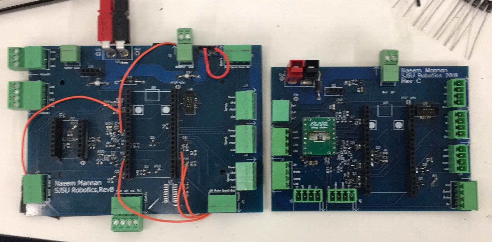

Meetings with interdisciplinary engineers, my part included designing and populating PCBs for the drive system in DipTrace including designing a schematic and then putting it all together on a PCB .This included using MOSFET switching to convert 3V3 to 5V using an ESP 32 WROOM.

Using an Arduino UNO to build an RFID doggie door using Master Slave communication protocol to open a door using a motor. My part was to do some minor coding as well as make the electrical connections from microcontroller to other components.
Meeting with a group of other electrical engineers to build a project to locate an unknown RF transmitter, specifically for drones operating at 2.4 GHz. I did some debugging and figuring out how some of the firmware worked as well as build some PCBs and design some case for protection of outer elements.
Meeting with a group of other embedded systems engineers to design a system that would rev up a motor to 1500 RPM controlled with a keypad using FreeRTOS, PID systems,interrupts hiearchy, and timmer counters; all done on a SAMD20 through ATMEL studios.
Duo project where I designed and built a radar dish, while my partner did the simulations for the project in HFSS. Along with this I designed a system that would take sample points every 1 degree and then put the average of 5 samples into an excel file. This used a Python script to collect data and an Arduino using RTOS to take accurate and communicate via serial communications. Made my own Software Defined Radio, SDR.

A group of design engineers making hardware using RTL CAD software in Vivado and then using an eclipse based SDK to control the hardware to play a song called Daisy Bell.
Self designed Pipboy 3000 in Creo Parametrics to hold a Nokia touch screen phone
during my first winter break at SJSU. See my GrabCad for more.


Self made website using HTML that I decided to do during my free time after I graduated since I was curious about learning the HTML language and some web development as well as to showcase my skills and projects during my time in SJSU.
Duo project with a friend from college including working with React, CSS, JavaScript and Python to make a functioning management app. My part includes working on webscraping applications to find suitable candidates using Selenium and BeautifulSoup to look for groups. This included weekly meetings remotely and some gatherings to work on the project in person.
Individual robotic leg project where I designed a leg like structure and used a microcontroller to move the leg up and down with a linear actuator. This used CREO parametrics to design the leg and a 3D printer to build the parts in PLA and rubber. Looking to do more with it and include servo motors to move the leg when I get more funds.
Project done at my internship which included doing some machine learning to pick up variables in a .lib file and then develop a truth table automatically for any standard cell that was picked up. This was to make a datasheet automatically and build it quickly, but also the GUI would check the consistancy of cells between Verilog files and lef files or Verilog and library files. This was to give a quality assurance and increase the integrity of the company's products.